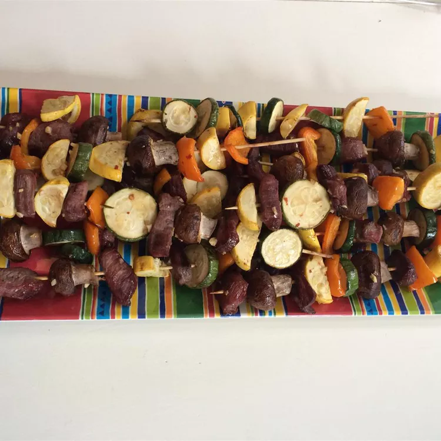

Firecracker Kabobs

Description
I make this for the 4th of July and have used it on pork, beef, and chicken. I love to marinate my mushrooms too. The marinade is sweet with a mild kick.
Ingredients
Marinade
- half cup maple syrup
- half cup lime juice
- 6 cloves garlic, minced, or more to taste.
- 4 teaspoons ketchup
- 4 teaspoons soy sauce
- 1 teaspoon red pepper flakes
Kabobs
- 1 pound cubed beef stew meat
- 1 (8 ounce) package whole mushrooms
- 1 onion, chopped
- 1 green bell pepper, chopped
- 1 yellow squash, chopped
- 1 zucchini, chopped
Directions
- Whisk maple syrup, lime juice, garlic, ketchup, soy sauce, and red pepper flakes together in a bowl until marinade is smooth.
- Place beef in a bowl; pour in marinade and stir to coat. Marinate beef in the refrigerator, at least 3 hours.
- Preheat an outdoor grill for medium-high heat and lightly oil the grate. Soak skewers in water for at least 10 minutes.
- Thread beef, mushrooms, onion, green bell pepper, squash, and zucchini onto skewers.
- Cook kabobs on the preheated grill until vegetables are tender and beef is cooked through, 5 to 7 minutes per side.